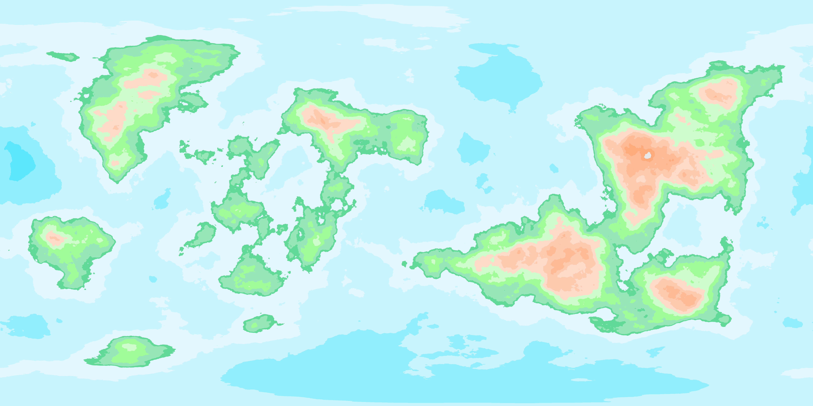

Kaelia
 |
| Type | Terrestrial |
|---|
| Star | G-type |
|---|
| Orbit | 1.1 AU |
|---|
| Year Length | 380 days |
|---|
| Tech Level | Information Age |
|---|
Kaelia is an Earth-like terrestrial planet situated at 1.1 AU from its parent G-type star. It is characterized by active tectonics, a diverse range of biomes, and a sophisticated global society.
Geography
The planet consists of five primary continents, each with unique environmental and cultural characteristics.
Cosmology
* Planetary Type: Earth-like (Terrestrial).
* Orbit: Single star (G-type), roughly 1.1 AU. Year length ~380 days.
* Tectonics: Highly active; diverse mountain ranges and deep oceanic ridges.
* Climate: Realistic weather system with polar caps, strong trade winds, and defined seasonal variations.
* Technology Level: Modern / Information Age (equivalent to 21st Century Earth).
* Development Philosophy: Modern-Ancient Synthesis. Unlike Earth, Kaelia's development was characterized by Minimal Colonization. Each continent achieved modern technological levels independently, preserving their ancestral traditions, aesthetics, and social structures. Technology is viewed as a high-fidelity extension of cultural heritage rather than a replacement for it.
* Global Heraldry System: A standardized protocol for digital and physical identification. Every country and major metropolis maintains a unique Heraldry Object consisting of a Motto, a Flag (3:2 ratio), and a Coat of Arms. These symbols are integrated into all maritime, aerospace, and digital protocols.
* Anomalies: Low Magic. "Magic" is scientifically categorized as an advanced understanding of environmental energies (e.g., Quantum Wind-Grids in Gryning).
---